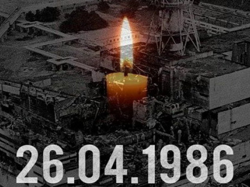

Чорнобильська катастрофа та її наслідки

1. Аварія на ЧАЕС у 1986 році. Коріння трагедії
Історія ЧАЕС до аварії
Основні принципи роботи ЧАЕС
Аварія на ЧАЕС. Розвиток подій
2. Чорнобиль очима ліквідаторів
3. Реалії постчорнобильської доби
Наслідки катастрофи
Будівництво нового укриття
Людська діяльність на території зони відчуження
Висновки
Джерела і література
Вступ
Більш ніж 30 років тому, 26 квітня 1986 року, сталася одна з найбільших трагедій в історії українського народу - аварія на Чорнобильській атомній електростанції. У цей день людство побачило справжню силу мирного атому. Здавалося б: було зруйновано всього один реактор, лише 5% радіоактивних речовин потрапило за межі енергоблоку. Та навіть цих 5% вистачило, щоб знищити цілий етнокультурний регіон, зробити малопридатними для життя десятки тисяч квадратних кілометрів територій, вбити тисячі чоловік та зруйнувати життя мільйонів людей.
Не дивлячись на те, що ця катастрофа відбулася відносно недавно, інформація відносно неї досить суперечлива. Це повязано, в першу чергу, з політикою тогочасної влади, а також зі швидким розвитком подій на ЧАЕС. У цій роботі планується розглянути основні причини трагедії, етапи ліквідації її наслідків та реалії постчорнобильської доби.
Для написання реферату були використані друковані джерела, документи, інтернет-ресурси та спогади ліквідаторів.
1. Аварія на ЧАЕС у 1986 році. Коріння трагедії
Історія ЧАЕС до аварії
Чорнобильська атомна електростанція (ЧАЕС) розташована в східній частині великого географічного регіону, іменованого білорусько-українським Поліссям, на березі ріки Прип'яті, що впадає в Дніпро, у 18 км від районного центра - м. Чорнобиль. На 112 кілометрах південніше знаходиться столиця України - Київ, а в 100 км на схід - місто Чернігів. Чорнобильська атомна електростанція знаходиться поряд з містечком обслуговуючого персоналу - містом Прип'ять.
Місцевість тут відрізняється відносно плоским рельєфом. Роботи зі спорудження станції були початі в 1970 році.
Для білорусько-українського Полісся характерна порівняно невисока щільність населення - приблизно 70 чоловік на квадратний кілометр. До аварії на ЧАЕС загальна чисельність населення в 30-ти кілометровій зоні навколо станції складала близько 130 тисяч чоловік.
Будівництво Чорнобильської АЕС велося чергами. Кожна з них включала 2 енергоблоки, що мали загальні системи спеціального водоочищення і допоміжні спорудження на площадці. У їхній склад входять: сховище рідких і твердих радіоактивних відходів, відкриті розподільні пристрої, газове господарство, резервні дизель-генераторні електростанції, гідротехнічні й інші спорудження. Джерелом технічного водопостачання перших чотирьох енергоблоків є наливний ставок-охолоджувач площею 22 квадратних кілометра. Були передбачені також окремі насосні станції для 3-го і 4-го блоків. Малися резервне електропостачання від дизель - генераторів. Навіть неповне перерахування споруджень ЧАЕС говорить про те, наскільки це був великий енергетичний об'єкт.
вересня 1977 року включений в електричну мережу перший турбогенератор. Чорнобильська АЕС дала країні першу електричну енергію. 24 січня 1978 року на електростанції був вироблений перший мільярд кіловат-годин електроенергії. 21 грудня 1978 року був здійснений запуск другого енергоблоку. 22 квітня 1979 року ЧАЕС виробила перші 10 мільярдів кіловат-годин електроенергії. 3 грудня 1981 року був запущений третій блок електростанції. 31 грудня 1983 року дав першу електроенергію і четвертий енергоблок. Станом на 21 серпня 1984 року Чорнобильська АЕС виробила 100 мільярдів кіловат-годин електроенергії.
До весни 1986 року на Чорнобильській АЕС діяли чотири енергоблоки. Кожен енергоблок складався з ядерного реактора і двох парових турбін.
Таким чином, на 1 січня 1986 року потужність чотирьох блоків станції складала 4 мільйони кіловатів, що відповідало її проектної потужності.
ЧАЕС на той час була однією з найпотужніших електростанцій у Радянському Союзі.
Основні принципи роботи ЧАЕС
На Чорнобильської АЕС були встановлені ядерні реактори РБМК-1000. Реактор цього типу був спроектований більш ніж 30 років тому і використовувався в СРСР на декількох електростанціях. Теплова потужність кожного реактора складає 3200 Мвт. Мається два турбогенератори електричною потужністю по 500 Мвт кожний (загальна електрична потужність енергоблоку - 1000 Мвт).
Паливом для РМБК-1000 служить слабко збагачений двоокис урану. У вихідному для початку процесу стані кожна тонна двоокису урану містить приблизно 20 кг ядерного палива - урану-235. Стаціонарне завантаження двоокису урану в один реактор дорівнює 180 тонн. Ядерне паливо засипається в реактор не навалом, а міститься у виді тепловиділяючих елементів - твелів. Твел являє собою трубку з цирконієвого сплаву, в якій містяться таблетки двоокису урану циліндричної форми. Твели розміщають в активній зоні реактора у вигляді так званих тепловиділяючих зборок, що поєднують по 18 твелів. Ці зборки, а їх близько 1700 шт., поміщаються в графітову кладку, для чого в ній зроблені технологічні канали. У них же циркулює і теплоносій. У РМБК це вода, що у результаті теплового впливу від ланцюгової реакції, яка відбувається в реакторі, доводиться до кипіння, і пара через технологічні магістралі подається на турбогенератори, де безпосередньо виробляється електроенергія. Круговорот води в реакторі здійснюється головними циркуляційними насосами. Їх всього вісім - шість працюючих і два резервних.
Сам реактор поміщений усередині бетонної шахти, що є засобом біологічного захисту. Графітова кладка укладена в циліндричний корпус товщиною 30 мм. Розмір активної зони реактора - 7м. по висоті і 12 м. у діаметрі. Весь апарат спирається на бетонну підставу, під яким розташовується басейн-барботер системи локалізації аварії.
Ланцюгова реакція і тепловиділення в реакторній зоні загалом протікають у такий спосіб: ядро урану під впливом нейтрона поділяється на два осколкових ядра. При цьому виділяються нові нейтрони. Вони у свою чергу викликають розпад інших ядер урану.
Але не всі нейтрони беруть участь у ланцюговій реакції. Деякі з них поглинаються матеріалами конструкції чи реактора виходять за межі активної зони. Ланцюгова реакція починається тільки тоді, коли хоча б один з нейтронів, що утворилися, бере участь у наступному розподілі атомних ядер. Ця умова характеризується коефіцієнтом ефективності розмноження (КЕФ), що визначається як відношення числа нейтронів даного покоління до числа нейтронів попереднього покоління. При значенні цього коефіцієнта рівному 1 у реакторі відбувається ланцюгова реакція розподілу, що самопідтримується. Такий стан реактора називається критичним. При значенні КЕФ менше 1 процес розподілу ядер урану буде загасаючим (підкритичний стан), а при КЕФ більше 1 інтенсивність розподілу і потужність реактора будуть наростати (надкритичний стан). Осколки атомних ядер, розлітаючись з великою швидкістю, взаємодіють з іншими ядрами і гальмуються у своєму русі. При втраті кінетичної енергії осколків і відбувається виділення тепла.
При перебуванні реактора в надкритичному стані наростання ланцюгової реакції відбувається в некерованому режимі, що може привести до ядерного вибуху. Для регулювання швидкості протікання ланцюгової реакції застосовуються стрижні з матеріалів поглинаючих нейтрони - бористої сталі чи карбіду бора. Вони вводяться (чи виводяться) з активної зони реактора збільшуючи чи зменшуючи кількість нейтронів і відповідно чи прискорюючи сповільнюючи плин ланцюгової реакції.
Конструкторами РМБК-1000 передбачалося, що реактор повинний мати ряд протиаварійних систем. Це система керування і захисту реактора, що включає в себе 211 твердих стрижнів-поглиначів і апаратура контролю за рівнем і розподілом нейтронного потоку. Вона забезпечує пуск, ручне й автоматичне регулювання потужності, планову й аварійну зупинку реактора. Остання автоматично здійснюється по сигналах аварійного захисту при натисканні кнопки.
Крім того, на ЧАЕС були передбачені захисні системи на випадок, якщо аварія усе-таки відбудеться. У випадку розриву труб контуру циркуляції теплоносія, вмикалася система аварійного охолодження реактора (САОР), яка подавала воду з гідравлічних ємностей у технологічні канали для екстреного охолодження активної зони реактора. Конструктори стверджували, що система аварійного захисту РМБК на Чорнобильської АЕС може автоматично запобігти серйозних наслідків у випадку аварії. Отже, будь-яка велика аварія, на їхню думку, могла бути локалізована без відчутної шкоди для здоров'я людей та навколишнього середовища. Однак подальші події довели, м'яко кажучи, невірність подібних тверджень.
чорнобильська катастрофа аварія атомний
Аварія на ЧАЕС. Розвиток подій
День 25 квітня 1986 року на четвертому енергоблоці ЧАЕС планувався не зовсім як звичайний. Передбачалося зупинити реактор на планово-попереджувальний ремонт. Але перед заглушенням ядерної установки керівництво ЧАЕС планувало провести деякі експерименти. Перед зупинкою були заплановані іспити одного з турбогенераторів станції в режимі вибігу з навантаженням власних нестатків блоку. Суть цього експерименту полягає в моделюванні ситуації, коли турбогенератор може залишитися без своєї рушійної сили, тобто без подачі пари. Для цього був розроблений спеціальний режим, відповідно до якого, при відключенні пари за рахунок інерційного обертання ротора генератор якийсь час продовжував виробляти електроенергію, необхідну для власних нестатків, зокрема для харчування головних циркуляційних насосів. Звернемося до хронології подій. Отже 25 квітня 1986 року..
г.00 хв. - відповідно до графіка зупинки реактора на планово-попереджувальний ремонт персонал приступив до зниження потужності апарата, працюючого на номінальних параметрах.
г.05 хв. - при тепловій потужності 1600 Мвт. відключений від мережі турбогенератор №7, що входить у систему 4-го енергоблоку. Електроживлення власних нестатків перевели на турбогенератор №8
г.00 хв. - відповідно до програми іспитів відключається система аварійного охолодження реактора. Оскільки реактор не може експлуатуватися без системи аварійного охолодження, його необхідно було зупинити. Але дозвіл на глушіння апарата не було дано. І реактор продовжував працювати без системи аварійного охолодження (САОР).
г.10 хв. - отриманий дозвіл на зупинку реактора. Почалося зниження його теплової потужності до 1000-700 МВТ відповідно до програми іспитів. Та оператор не справився з керуванням, у результаті чого потужність апарата упала майже до 0. У таких випадках реактор повинний глушитися. Але персонал не порахувався з цією вимогою. Почали підйом потужності.
квітня, 1г.00 хв. - персоналу удалося підняти потужність до рівня 200 Мвт (теплових) замість покладених 1000-700.
г.03 хв. - До шести працюючих насосів підключили ще два, для підвищення надійності охолодження реактора після іспитів.
г.20 хв. - Для утримання потужності реактора з нього були виведені стрижні автоматичного регулювання, порушивши найсуворішу заборону працювати на реакторі без визначеного запасу стрижнів - поглиначів нейтронів. У той момент у реакторі знаходилося тільки шість стрижнів, що приблизно вдвічі менше гранично припустимої величини.
ч.23 хв. - Оператор закрив клапана турбогенератора. Подача пари припинилася. Почався вибіг турбіни. У момент відключення другого турбогенератора повинна була спрацювати ще одна система захисту по зупинці реактора. Але персонал відключив її, щоб повторити іспит, якщо перша спроба не вдасться. У результаті виниклої ситуації реактор потрапив у хитливий стан, що привело до появи позитивної радіоактивності і розігріву реактора.
ч.23 хв.40 сек. - керівник зміни 4-го енергоблоку, зрозумівши небезпеку ситуації, дав команду натиснути кнопку найефективнішого аварійного захисту. Поглинаючі стрижні пішли вниз, але через кілька секунд зупинилися. Спроби ввести їх у реакторну зону не удалися. Реактор вийшов з-під контролю.
ч.23 хв.44 сек. Потужність реактора різко збільшилася і приблизно в 100 разів перевищила проектну.
ч.23 хв.45 сек. ТВЕЛи почали руйнуватися. У паливних каналах створився високий тиск.
ч.23 хв.49 сек. Паливні канали стали руйнуватися.
ч.23 хв. Пішло два вибухи. Перший - через гримучу суміш, що утворилася в результаті розкладання водяної пари. Другий був викликаний розширенням пар палива. Вибухи викинули дах реактору четвертого блоку вагою 1200 тонн. У реактор проникнуло повітря. Воно реагувало з графітовими стрижнями, утворюючи оксид вуглецю II (чадний газ). Цей газ спалахнув, почалася пожежа. Покрівля машинного залу зроблена з легкозаймистих матеріалів.
з 140 тонн ядерного палива, що містять плутоній і інші надзвичайно радіоактивні матеріали (продукти розподілу), а також осколки графітового сповільнювача, теж радіоактивні, були викинуті вибухом в атмосферу. Крім того, пари радіоактивних ізотопів йоду і цезію були викинуті не тільки під час вибуху, але і поширювалися під час пожежі. У результаті аварії була цілком зруйнована активна зона реактора, ушкоджене реакторне відділення, машинний зал і ряд інших споруджень.
Були знищені бар'єри і системи безпеки, що захищають навколишнє середовище від радіонуклідів, що містяться в опроміненому паливі, і відбувся викид активності з реактора. Цей викид на рівні мільйонів кюрі в добу, продовжувався протягом 10 днів з 26.04.86. по 06.05.86., після чого упав у тисячі разів і надалі поступово зменшувався. По характеру протікання процесів руйнування 4-го блоку і по масштабах наслідків зазначена аварія мала категорію позапроектної і відносилася до сьомого рівня (важкі аварії) по міжнародній шкалі ядерних подій INES.
Уже через годину радіаційна обстановка в місті була ясна. Ніяких мір на випадок аварійної ситуації там передбачено не були: люди не знали, що робити. По всім інструкціях і наказам, що існують уже 25 років, рішення про виселення населення з небезпечної зони повинні були приймати місцеві керівники. До моменту приїзду Урядової комісії можна було вивести з зони всіх людей навіть пішки. Але ніхто не взяв на себе відповідальність.
На роботах у небезпечних зонах (у тому числі в 800 метрах від реактора) знаходилися солдати без індивідуальних засобів захисту, зокрема, при розвантаженні свинцю. Потім з'ясувалося, що такого одягу в них немає. У подібному положенні виявилися і вертолітники. І офіцерський склад, у тому числі і маршали, і генерали дарма бравірували, з'являючись поблизу реактора в звичайній формі. У даному випадку необхідна була розумність, а не помилкове поняття сміливості. Водії при евакуації Прип'яті і при роботах по обвалуванню ріки також працювали без індивідуальних засобів захисту. Не може служити виправданням, що доза опромінення складала річну норму - в основному це були молоді люди, а отже, це позначиться на потомстві. Майже усюди були відсутні засоби індивідуального захисту. На першому етапі аварії вони були тільки в спецпідрозділах. Уся система цивільної оборони виявилася цілком паралізованою. Не виявилося навіть працюючих дозиметрів. Залишається тільки захоплюватися роботою і мужністю пожежного підрозділу. Вони запобігли розвитку аварії на першому етапі. Але навіть підрозділи, що знаходились в Прип'яті, не мали відповідного обмундирування для роботи в зоні підвищеної радіації. Як і завжди, досягнення мети обійшлося ціною багатьох і багатьох життів.
Таким чином, можна коротко визначити шістьох основних причин аварії на четвертому енергоблоці:
.Зниження оперативного запасу радіоактивності, тобто зменшення кількості стрижнів-поглиначів в активній зоні реактора нижче припустимої величини.
2.Несподіваний провал потужності реактора, а потім робота апарата при потужності меншій, ніж було встановлено програмою іспитів.
.Підключення до реактора усіх восьми насосів з перевищенням витрат по ЦГН.
.Блокування захисту реактора за рівнем води і тиску пари в барабані-сепараторі.
.Блокування захисту реактора по сигналі відключення пари від двох турбогенераторів.
.Відключення системи захисту, передбаченої на випадок виникнення максимальної проектної аварії, - системи аварійного охолодження реактора.
У результаті теплового вибуху, який відбувся в реакторі, зруйнувалася активна зона реакторної установки і частини будинку четвертого енергоблоку, а також відбувся викид частини радіоактивних продуктів, що нагромадилися в активній зоні, в атмосферу. Вибухи реактору зрушили зі свого місця металоконструкції верха реактора, зруйнували всі труби високого тиску, викинули деякі регулюючі стрижні і палаючі блоки графіту, зруйнували розвантажувальну сторону реактора, підживлюючий відсік і частину будинку. Осколки активної зони і випарних каналів упали на дах реакторного і турбінного будинків. Була пробита і частково зруйнований дах машинного залу другої черги станції. Під час вибуху частина панелей перекриття упала на турбогенератор №7, пошкодивши мастилопроводи й електричні кабелі, що привело до їхнього загоряння, а велика температура усередині реактора викликала горіння графіту.
Найбільшу небезпеку, зв'язану з аварією представляло те, що, руйнування реакторної зони викликало викид в атмосферу і на територію ЧАЕС великої кількості радіоактивних деталей, графіту, ядерного палива. Викид радіонуклідів (вид хитливих атомів, що при мимовільному перетворенні в інший нуклід випускають іонізуюче випромінювання - це і є власне радіоактивність) являв собою розтягнутий у часі процес, що складається з декількох стадій.
27 квітня 1986 року висота забрудненого радіонуклідами повітряного струменя, що виходить з ушкодженого енергоблоку, перевищувала 1200 метрів. Рівень радіації на віддаленні 5-10 км від місця аварії складав 1 рентген у годину. Викид радіоактивності в основному завершився до 6 травня 1986 року.
2. Чорнобиль очима ліквідаторів
В теплу весняну ніч 26 квітня 1986 року о 1г.24хв. на пункт пожежної охорони міста Припять поступив сигнал про пожежу на Чорнобильській атомній електростанції. Наряди пожежних частин одними з перших прибули на місце аварії та почали гасити велику пожежу, яка виникла. До пятої години ранку пожежу вдалося загасити. Тепер горіли тільки залишки графіту на тому місці, де кілька годин тому був реактор. Пожежникам вдалося зменшити наслідки аварії та запобігти поширенню пожежі, але майже всі вони загинули, бо отримали несумісні з життям дози радіації.
квітня у місті вже знаходились військові. У реакторі пожежа продовжувалася, рівень радіації стрімко зростав. Ось що згадує полковник Володимир Гребенюк: "Біля столової "Електрон" рівень радіації сягав 2080 рентген на годину". При цьому нормальна доза радіації - до 2 рентгенів на рік. Доза понад 400 рентген вважається смертельною. За перший день жителі Припяті отримали дозу від 20 до 150 рентген. Таким чином, за 4-5 днів усі жителі міста отримали б смертельну дозу. На щастя, жителів почали вивозити з небезпечної зони 27 квітня. 2-3 травня була евакуйована 10-кілометрова зона навколо станції, а незабаром люди покинули і 30-кілометрову зону. Загалом було евакуйовано близько 120 тисяч мешканців зони відчуження.
Тим часом у Припяті тисячі військовослужбовців, пожежників, міліціонерів та науковців працюють над ліквідацією аварії. У готелі "Припять" був розміщений командний пункт, де приймалися найважливіші рішення. Спочатку необхідно було загасити пожежу у реакторі, внаслідок якої продовжувався викид радіації. Для цього з Афганістану були викликані бригади пілотів. З гелікоптерів у палаючий реактор скидалися 80-кілограмові мішки з піском та борною кислотою. Внаслідок того, що розпечене радіоактивне повітря підіймалося вгору, завдання ускладнювалось. Зі спогадів генерала Миколи Антошкіна: "За кожен короткий прохід гелікоптера кожен член команди отримував дозу 5-6 рентген, а якщо більше затримувалися - то більше. "
Деякі пілоти за день здійснювали до 33 вильотів. Рівень радіації над реактором складав близько 3500 рентген. Усього у реактор було скинуто 6000 тонн піску та борної кислоти. Від отриманих у Чорнобилі доз радіації загинуло більше 600 пілотів.
Зі спогадів генерала Миколи Антошкіна: "Температура на цій висоті була приблизно 120-180 градусів, а рівень радіації такий, що ДП-5 на 500 рентген повністю зашкалював".
Коли реактор засипали піском, у ньому почала підвищуватися температура. Якщо б температура перейшла критичну межу, то міг би статися ще один вибух. 195 тонн ядерного палива знаходилися на дні реактора. Якби бетонна плита, на якій стоїть реактор, тріснула, і ядерне паливо вступило в контакт з водою, то могла статися ще більша катастрофа - ядерний вибух, який би знищив мільйони людей і зробив би непридатними для життя величезні території.
Зі спогадів Василя Нестеренко, ядерного фізика: "Якби лопнула бетонна плита, на якій стоїть станція, і розплавлений уран з графітом потрапив у воду, то 1400 кілограмів суміші води, графіту та урану утворили б критична масу, достатню для ядерного вибуху… Добре, що цього не сталося. Але навколо Києва, навколо Мінська, навколо Гомеля стояли тисячі вагонів для евакуації людей із-за очікуваного вибуху. "
Для того, щоб не було вибуху, з-під реактора була відкачана вода. Крім того, у реактор було скинуто 2400 тонн свинцю. Свинець плавився, закриваючи провалля та зменшуючи випромінення та викиди радіоактивних матеріалів. Але ці дії дали лише відстрочку. Ядерне паливо розкололо плиту та просочилося у резервуар. Якби воно пішло далі, то могло б дійти до підземних вод, і тоді постраждала б вся Україна.
травня 1986 року в Чорнобиль приїздять тульські шахтарі.
Зі спогадів Володимира Наумова, шахтаря: "Задача у нас була одна: від третього реактору прокопати тунель довжиною 150 метрів під аварійний четвертий реактор, змонтувати під ним камеру 30х30 метрів для того, щоб там потім установити холодильні установки на рідкому азоті, які будуть охолоджувати реактор з-під землі".
Тунель проходив на глибині 12 метрів під землею, щоб зменшити дози опромінення. Там не було вентиляції, температура сягала 50 градусів, а радіоактивність - від 1 рентгена на годину. Шахтарі працювали групами по 30 чоловік і змінялися кожні три години цілодобово. За один місяць та чотири дні поставлену задачу було виконано. Але замість холодильних установок камеру під реактором залили бетоном, щоб посилити конструкцію. Усього в операції прийняли участь 10000 шахтарів. Кожен отримав дозу від 30 до 180 рентген. Кожен пятий шахтар помер, не доживши до 40 років.
Зі спогадів Ігоря Костіна, чорнобильського журналіста: "Ніхто не стояв і не командував: "Я генерал, ану іди працюй!" - кожен робив свою справу".
Тим часом у зоні відчуження продовжується ліквідація наслідків аварії. Над зоною гелікоптери скидають з неба тонни липучої рідини - бурби - яка змушує радіоактивний пил осідати на землю. А на землі бригади ліквідаторів видаляють покриваючий усе радіоактивний пил.
Ігор Костін, журналіст: "Створювалися спеціальні бригади мисливців, які ходили по селах, по лісах, і відстрілювали котів, собак та інших бродячих тварин".
Усі тварини мали бути вбиті, бо їхня шерсть була насичена радіоактивністю, і це загрожувало ліквідаторам.
У травні в зоні відчуження евакуюються останні села, в яких ще залишились люди. Будинки зносяться один за одним і зариваються.
Ввечері уся техніка та люди були вкриті радіоактивним пилом. Ігор Костін розповідає, що ліквідатори йшли спочатку у душ і милися по півгодини, щоб змити з себе як можна більше пилу. Потім вони одягалися у чисту одежу і йшли до столової. Там дуже добре кормили, бо робота в умовах іонізуючого випромінення забирала багато здоровя та сил в організму.
А на ЧАЕС навколо четвертого енергоблоку 300 тисяч кубічних метрів забрудненого ґрунту зносяться у рви та покриваються бетоном.
Через 8 тижнів після катастрофи починається один з найголовніших етапів ліквідації наслідків аварії - розробка проекту укриття над зруйнованим реактором.
Лев Бочаров, головний конструктор саркофагу: "Цей обєкт настільки унікальний - в світі більше таких не було обєктів. Тим паче з таким рівнем радіації, де людина може працювати лічені хвилини або секунди…"
Через 3 місяці після аварії розпочинається гігантське будівництво. Люди в таких умовах працювати не могли, тому більшість робіт виконували роботи і машини з дистанційним керуванням. Але встановлювати та привозити машини на місце будівництва мали люди. Вони не могли знаходитись поблизу реактору більше кількох хвилин, бо отримали б смертельну дозу радіації.
Кожна металічна деталь саркофагу виготовлялася на заводах і привозилась до Чорнобилю. Балки важили 150 тонн і мали 70 метрів у довжину, а опори - 45 метрів. Збір саркофагу здійснювався величезним краном "Демарк 4000".
Лев Бочаров: "Кранівник нічого не бачив. Він виконував тільки команди. Помилитися не можна - якщо б помилка сталася, то балку потім не можна було б ніяк підчепити та підняти. "
Будівництво продовжувалося, але незабаром виникла проблема: дах енергоблоку був вкритий уламками графіту, які вибухом викинуло з реактору. Щоб продовжити роботу, необхідно було скинути їх з даху. Всю роботу спочатку виконували роботи. Але випромінювання вивело їх зі строю, один робот впав з даху. Роботів повинні були замінити люди. На цю роботу послали батальйон молодих солдат, викликаних з запасу. Цих людей прозвали біороботами. Ще нікому і ніколи не доводилось працювати у таких умовах.
Захист на солдатах був вражаючий - зшитий вручну костюм зі свинцю, кілька рукавиць, протигаз, маска - загалом кілька десятків деталей загальною вагою до 30 кілограмів. Але цей захист зменшив отриману дозу лише на 35%.
Генерал Микола Тараканов: "Це тривало більше ніж два з половиною тижні. Це було пекло, а не операція, розумієте? Це добре, коли були по 2-3 хвилин, а коли стало 7-12 тисяч рентген на годину - працював солдат 40 секунд. Тобто, у мене і моїх вчених вистачило розуму врятувати людей - час роботи. Обмежив - менша доза, ще обмежив - ще менша. "
За один вихід на кришу солдат встигав набрати та скинути лише 2 лопати радіоактивного сміття. Кожні 10 хвилин на кришу виходила нова група солдат. Деякі люди підіймалися на кришу до 5 разів! Всього в цій операції прийняло участь 3500 чоловік. Як тільки дах був очищений, будівництво саркофагу продовжилось. Тривало воно до кінця жовтня.
В кінці жовтня зачистка зони та будівництво саркофагу завершились. Всього через чорнобильську битву пройшло 100 тисяч військових та 400 тисяч мирних громадян.
Генерал Микола Тараканов: "Пятсот тисяч чоловік - більше, ніж наполеонівська армія - пройшло через Чорнобиль. Армію опромінили, уявляєте?"
На знак перемоги над небезпекою ліквідатори підняли прапор над Чорнобилем. Вони надавали цьому такого ж значення, як і бійці Червоної армії підняттю прапора над Рейхстагом.
3. Реалії постчорнобильської доби
Наслідки катастрофи
Чорнобильська катастрофа показала справжню силу мирного атому. Найбільша у світі ядерна катастрофа сталася через недосконалість конструкції реактору, помилки персоналу та грубе порушення техніки безпеки.
Ліквідація наслідків аварії тривала півроку. Більше 500 тисяч людей прийняли участь у боротьбі з радіоактивною загрозою. Пожежники, медики, шахтарі, інженери, вчені, військові та звичайні люди самовіддано робили свою справу. Загальними зусиллями вдалося ізолювати зруйнований реактор та частково очистити зону відчуження.
Але ця перемога дісталася дорогою ціною. Усі ліквідатори отримали небезпечні дози радіації, 30 тисяч з них вже померло, 200 тисяч є інвалідами. В усіх цих людей серйозні проблеми зі здоровям.
Через аварію на ЧАЕС було знищено цілий етнокультурний регіон. 130 тисяч - стільки людей назавжди покинули свої домівки. Через несвоєчасну евакуацію населення усі люди отримали дози радіації, які перевищували допустиму норму у десятки разів. Скільки з них померло чи мають проблеми зі здоровям - невідомо, дослідження на ці теми не проводились.
Близько 2 мільйонів людей і зараз проживають у забруднених радіацією районах України, Білорусії та Росії. У цих регіонах спостерігається підвищена захворюваність та смертність. Внаслідок того, що після аварії вітер розніс радіонукліди по Європі, у деяких районах Франції та Скандинавії спостерігається підвищена захворюваність на рак щитовидної залози.
Варто розглянути і економічні наслідки аварії. Тільки безпосередні витрати на ліквідацію її наслідків склали близько 18 мільярдів доларів. Від цього удару в умовах тодішньої кризи СРСР так і не зміг оправитись.
У аварії були і політичні наслідки. Саме після цієї катастрофи СРСР почав тісно співпрацювати із Заходом. З цієї події почався етап покращення відносин з країнами західного світу, відомий як епоха гласності, яка ознаменувала кінець Холодної війни. Розпочалось ядерне роззброєння, були підписані міжнародні договори про непоширення ядерної зброї.
Саме після чорнобильської катастрофи припинилося будівництво багатьох атомних електростанцій. На існуючих АЕС значно посилились норми безпеки, стали вдосконалюватись конструкції реакторів. Більш серйозно стали відноситись до альтернативних джерел енергії.
Будівництво нового укриття
Не дивлячись на те, що проводилась дезактивація зони відчуження, повністю очистити її від радіації так і не вдалось. Можливо, у майбутньому людство і зможе повністю ліквідувати наслідки катастрофи. Але ряд зон, забруднених ізотопами цезію, плутонію та урану буде непридатним для життя ще тисячі років.
Саркофаг над зруйнованим енергоблоком розрахований на 30 років експлуатації. Зараз цей строк підходить к кінцю, саркофаг поступово руйнується. З радіоактивними відходами контактують вода та повітря. Площа усіх дірок на саркофазі сягає кількох десятків квадратних метрів. У разі обвалення існуючого саркофагу обєм викидів радіоактивних речовин буде дуже великим, бо в реакторі залишилось 95% ядерного палива, що було там на момент аварії.
У березні 2004 року Європейський банк реконструкції та розвитку оголосив тендер на проектування, будівництво і введення в експлуатацію нового саркофага для ЧАЕС. Переможцем тендеру в серпні 2007 року була визнана компанія NOVARKA, спільне підприємство французьких компаній Vinci Construction Grands Projects і BOUYGUES. Планується збудувати так звану "Арку", яка накриє сучасний об'єкт "Укриття". Країни-донори назбирали на будівництво нового укриття на ЧАЕС та сховища відпрацьованого ядерного палива 750 мільйонів євро. Всі витрати ретельно контролює ЄБРР. Основна функція нового саркофагу полягає в обмеженні розповсюдження радіоактивних речовин, які знаходяться в об'єкті Укриття. Ця умова повинна виконуватись, як за умов нормальної експлуатації, так в разі аварії (руйнація існуючого об'єкту Укриття). За проектом передбачено, що нова споруда буде експлуатуватись впродовж 100 років.
Особливість спорудження нового саркофагу полягає в тому, що він будуватиметься на відстані 180 метрів від об'єкту Укриття. Це дасть змогу суттєво знизити опромінення персоналу, задіяного на будівництві. Для будівництва буде створено спеціальний майданчик. Після завершення будівництва арки її насунуть, застосовуючи спеціальні механізми, на існуючий об'єкт Укриття.
За проектом новий саркофаг складатиметься з таких елементів:
·основна споруда, що включає аркову конструкцію, проліт якої у напрямку північ-південь становить 257,44 м, висота 108,39 м, довжина 150 м, фундаменти, західну та східну торцеві стіни, необхідні забезпечувальні та допоміжні системи;
·технологічний корпус, який включає ділянки дезактивації, фрагментації та упаковки, саншлюзи, майстерні та інші технологічні приміщення.
Новий саркофаг на ЧАЕС будуватимуть близько 3 тисяч робітників. Спорудження розпочалось в квітні 2012 року. Робочі працюють вахтовим методом, аби не перевищити дозу допустимої радіації.
Людська діяльність на території зони відчуження
Після того, як очистка зони відчуження та будівництво саркофагу завершились, станція поновила свою роботу. Восени 1986 року всі три енергоблоки знову запрацювали. АЕС виробляла електроенергію до кінця 2000 року. Тоді один за одним припинили свою роботу перший і другий реактор.15 грудня 2000 року о 13 годині 17 хвилин за наказом Президента України під час трансляції телемосту Чорнобильська АЕС - Національний палац "Україна" поворотом ключа аварійного захисту п'ятого рівня (АЗ-5) реактор енергоблоку № 3 Чорнобильської АЕС було зупинено назавжди і станція припинила генерацію електроенергії.
Сьогодні на території зони відчуження проживає кілька сотень самоселів, які повернулися до своїх домівок після аварії.
Крім того, кілька тисяч чоловік працює вахтовим методом на підприємствах, які діють на території зони і займаються дезактивацією та будівництвом обєктів. Працюють у зоні і вчені.
На території зони відчуження та ЧАЕС проводяться екскурсії для туристів.
Висновки
Аварія на Чорнобильській АЕС - одна з найстрашніших катастроф в історії людства. Її причини - помилкові дії персоналу, порушення техніки безпеки та недосконалість конструкції реактору. Вона показала справжню загрозу, яку таїть у собі мирний атом. Внаслідок вибуху реактору так чи інакше постраждало більше 2 мільйонів чоловік. Було забруднено тисячі квадратних кілометрів поліських земель.
В ліквідації наслідків аварії прийняло участь півмільйона чоловік, які впродовж кількох місяців займалися очисткою зони. Кілька десятків мільярдів доларів, кілька десятків тисяч життів, сотні тисяч хворих людей, кілька тисяч квадратних кілометрів забруднених радіонуклідами земель, 2 мертвих міста та десятки покинутих сел - така ціна аварії.
Ця катастрофа мала серйозні історичні наслідки. Серед них варто виділити економічну кризу в СРСР, початок епохи гласності та кінець Холодної війни, початок ядерного роззброєння.
Після закриття ЧАЕС у 2000 році на території зони вахтовим методом працюють тисячі людей, які займаються дезактивацію та будівництвом нового укриття. Проводяться екскурсії для туристів, які користуються великою популярністю.
Чорнобильська трагедія стала серйозним уроком для всіх нас і показала небезпеку неконтрольованого атому у наших руках.
Джерела і література
1.Барановська, Н.П. Чорнобильська катастрофа в публікаціях [Текст] / Н.П. Барановська. - К.: Ін-т історії України НАНУ, 2004. - 207 с
2.Губарев, В.С. Зарево над Припятью [Текст]: записки журналиста / В.С. Губарев. - М.: Мол. гвардия, 1987. - 239 с. - (Эврика).
.Губарев, В.С. Страсти по Чернобылю [Текст] / В.С. Губарев. - М.: Алгоритм, 2011. - 368 с. "Чорнобиль: події й уроки" Під ред. Е.І. Ігнатенка, М., 1989р.
.Костін, І.Ф. Чорнобиль [Текст]: (Сповідь репортера) / І.Ф. Костін. - К.: Мистецтво, 2002. - 320 с.
5.http://uk. wikipedia.org/wiki/Чорнобильська_атомна_електростанція <http://uk.wikipedia.org/wiki/Чорнобильська_атомна_електростанція>
6.http://ru. wikipedia.org/wiki/Авария_на_Чернобыльской_АЭС <http://ru.wikipedia.org/wiki/Авария_на_Чернобыльской_АЭС>
.http://www.chnpp.gov.ua/index. php? option=com_content&view=category&layout=blog&id=46&Itemid=40&lang=uk
.http://www.youtube.com/watch? v=Spi_MNiYtow
"Чорнобильська катастрофа та її наслідки"
МІНІСТЕРСТВО ОСВІТИ І НАУКИ, МОЛОДІ ТА СПОРТУ УКРАЇНИ
НАЦІОНАЛЬНИЙ ТЕХНІЧНИЙ УНІВЕРСИТЕТ "ХАРКІВСЬКИЙ ПОЛІТЕХНІЧНИЙ ІНСТИТУТ"
КАФЕДРА ПОЛІТИЧНОЇ ІСТОРІЇ